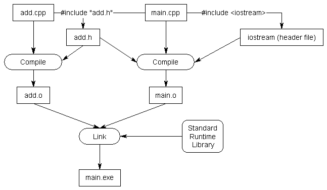

In lesson 2.8 -- Programs with multiple code files , we discussed how programs can be split across multiple files. We also discussed how forward declarations are used to allow the code in one file to access something defined in another file.
When programs contain only a few small files, manually adding a few forward declarations to the top of each file isn’t too bad. However, as programs grow larger (and make use of more files and functions), having to manually add a large number of (possibly different) forward declarations to the top of each file becomes extremely tedious. For example, if you have a 5 file program, each of which requires 10 forward declarations, you’re going to have to copy/paste in 50 forward declarations. Now consider the case where you have 100 files and they each require 100 forward declarations. This simply doesn’t scale!
To address this issue, C++ programs typically take a different approach.
Header files
C++ code files (with a .cpp extension) are not the only files commonly seen in C++ programs. The other type of file is called a header file . Header files usually have a .h extension, but you will occasionally see them with a .hpp extension or no extension at all.
Conventionally, header files are used to propagate a bunch of related forward declarations into a code file.
Key insight
Header files allow us to put declarations in one place and then import them wherever we need them. This can save a lot of typing in multi-file programs.
Using standard library header files
Consider the following program:
#include <iostream>
int main()
{
std::cout << "Hello, world!";
return 0;
}This program prints “Hello, world!” to the console using std::cout . However, this program never provided a definition or declaration for std::cout , so how does the compiler know what std::cout is?
The answer is that
std::cout
has been forward declared in the “iostream” header file. When we
#include <iostream>
, we’re requesting that the preprocessor copy all of the content (including forward declarations for std::cout) from the file named “iostream” into the file doing the #include.
Key insight
When you
#include
a file, the content of the included file is inserted at the point of inclusion. This provides a useful way to pull in declarations from another file.
Consider what would happen if the iostream header did not exist. Wherever you used std::cout , you would have to manually type or copy in all of the declarations related to std::cout into the top of each file that used std::cout ! This would require a lot of knowledge about how std::cout was declared, and would be a ton of work. Even worse, if a function prototype was added or changed, we’d have to go manually update all of the forward declarations.
It’s much easier to just
#include <iostream>
!
Using header files to propagate forward declarations
Now let’s go back to the example we were discussing in a previous lesson. When we left off, we had two files, add.cpp and main.cpp , that looked like this:
add.cpp:
int add(int x, int y)
{
return x + y;
}main.cpp:
#include <iostream>
int add(int x, int y); // forward declaration using function prototype
int main()
{
std::cout << "The sum of 3 and 4 is " << add(3, 4) << '\n';
return 0;
}(If you’re recreating this example from scratch, don’t forget to add add.cpp to your project so it gets compiled in).
In this example, we used a forward declaration so that the compiler will know what identifier add is when compiling main.cpp . As previously mentioned, manually adding forward declarations for every function you want to use that lives in another file can get tedious quickly.
Let’s write a header file to relieve us of this burden. Writing a header file is surprisingly easy, as header files only consist of two parts:
- A header guard , which we’ll discuss in more detail in the next lesson ( 2.12 -- Header guards ).
- The actual content of the header file, which should be the forward declarations for all of the identifiers we want other files to be able to see.
Adding a header file to a project works analogously to adding a source file (covered in lesson 2.8 -- Programs with multiple code files ).
If using an IDE, go through the same steps and choose “Header” instead of “Source” when asked. The header file should appear as part of your project.
If using the command line, just create a new file in your favorite editor in the same directory as your source (.cpp) files. Unlike source files, header files should not be added to your compile command (they are implicitly included by #include statements and compiled as part of your source files).
Best practice
Prefer a .h suffix when naming your header files (unless your project already follows some other convention).
This is a longstanding convention for C++ header files, and most IDEs still default to .h over other options.
Header files are often paired with code files, with the header file providing forward declarations for the corresponding code file. Since our header file will contain a forward declaration for functions defined in add.cpp , we’ll call our new header file add.h .
Best practice
If a header file is paired with a code file (e.g. add.h with add.cpp), they should both have the same base name (add).
Here’s our completed header file:
add.h:
// 1) We really should have a header guard here, but will omit it for simplicity (we'll cover header guards in the next lesson)
// 2) This is the content of the .h file, which is where the declarations go
int add(int x, int y); // function prototype for add.h -- don't forget the semicolon!In order to use this header file in main.cpp, we have to #include it (using quotes, not angle brackets).
main.cpp:
#include "add.h" // Insert contents of add.h at this point. Note use of double quotes here.
#include <iostream>
int main()
{
std::cout << "The sum of 3 and 4 is " << add(3, 4) << '\n';
return 0;
}add.cpp:
#include "add.h" // Insert contents of add.h at this point. Note use of double quotes here.
int add(int x, int y)
{
return x + y;
}
When the preprocessor processes the
#include "add.h"
line, it copies the contents of add.h into the current file at that point. Because our
add.h
contains a forward declaration for function
add()
, that forward declaration will be copied into
main.cpp
. The end result is a program that is functionally the same as the one where we manually added the forward declaration at the top of
main.cpp
.
Consequently, our program will compile and link correctly.

Note: In the graphic above, “Standard Runtime Library” should be labelled as the “C++ Standard Library”.
How including definitions in a header file results in a violation of the one-definition rule
For now, you should avoid putting function or variable definitions in header files. Doing so will generally result in a violation of the one-definition rule (ODR) in cases where the header file is included into more than one source file.
Related content
We covered the one-definition rule (ODR) in lesson 2.7 -- Forward declarations and definitions .
Let’s illustrate how this happens:
add.h:
// We really should have a header guard here, but will omit it for simplicity (we'll cover header guards in the next lesson)
// definition for add() in header file -- don't do this!
int add(int x, int y)
{
return x + y;
}main.cpp:
#include "add.h" // Contents of add.h copied here
#include <iostream>
int main()
{
std::cout << "The sum of 3 and 4 is " << add(3, 4) << '\n';
return 0;
}add.cpp:
#include "add.h" // Contents of add.h copied here
When
main.cpp
is compiled, the
#include "add.h"
will be replaced with the contents of
add.h
and then compiled. Therefore, the compiler will compile something that looks like this:
main.cpp (after preprocessing):
// from add.h:
int add(int x, int y)
{
return x + y;
}
// contents of iostream header here
int main()
{
std::cout << "The sum of 3 and 4 is " << add(3, 4) << '\n';
return 0;
}This will compile just fine.
When the compiler compiles
add.cpp
, the
#include "add.h"
will be replaced with the contents of
add.h
and then compiled. Therefore, the compiler will compile something like this:
add.cpp (after preprocessing):
int add(int x, int y)
{
return x + y;
}This will also compile just fine.
Finally, the linker will run. And the linker will see that there are now two definitions for function
add()
: one in main.cpp, and one in add.cpp. This is a violation of ODR part 2, which states, “Within a given program, a variable or normal function can only have one definition.”
Best practice
Do not put function and variable definitions in your header files (for now).
Defining either of these in a header file will likely result in a violation of the one-definition rule (ODR) if that header is then #included into more than one source (.cpp) file.
Author’s note
In future lessons, we will encounter additional kinds of definitions that can be safely defined in header files (because they are exempt from the ODR). This includes definitions for inline functions, inline variables, types, and templates. We’ll discuss this further when we introduce each of these.
Source files should include their paired header
In C++, it is a best practice for code files to #include their paired header file (if one exists). In the example above, add.cpp includes add.h .
This allows the compiler to catch certain kinds of errors at compile time instead of link time. For example:
something.h:
int something(int); // return type of forward declaration is intsomething.cpp:
#include "something.h"
void something(int) // error: wrong return type
{
}Because something.cpp #includes something.h , the compiler will notice that function something() has a mismatched return type and give us a compile error. If something.cpp did not #include something.h , we’d have to wait until the linker discovered the discrepancy, which wastes time. For another example, see this comment .
We will also see many examples in future lessons where content required by the source file is defined in the paired header. In such cases, including the header is a necessity.
Best practice
Source files should #include their paired header file (if one exists).
Although the preprocessor will happily do so, you should generally not
#include
.cpp files. These should be added to your project and compiled.
There are number of reasons for this:
- Doing so can cause naming collisions between source files.
- In a large project it can be hard to avoid one definition rules (ODR) issues.
- Any change to such a .cpp file will cause both the .cpp file and any other .cpp file that includes it to recompile, which can take a long time. Headers tend to change less often than source files.
- It is non-conventional to do so.
Best practice
Avoid #including .cpp files.
Tip
If your project doesn’t compile unless you #include .cpp files, that means those .cpp files are not being compiled as part of your project. Add them to your project or command line so they get compiled.
Troubleshooting
If you get a compiler error indicating that add.h isn’t found, make sure the file is really named add.h . Depending on how you created and named it, it’s possible the file could have been named something like add (no extension) or add.h.txt or add.hpp . Also make sure it’s sitting in the same directory as the rest of your code files.
If you get a linker error about function add not being defined, make sure you’ve included add.cpp in your project so the definition for function add can be linked into the program.
Angled brackets vs double quotes
You’re probably curious why we use angled brackets for
iostream
, and double quotes for
add.h
. It’s possible that a header file with the same filename might exist in multiple directories. Our use of angled brackets vs double quotes helps give the preprocessor a clue as to where it should look for header files.
When we use angled brackets, we’re telling the preprocessor that this is a header file we didn’t write ourselves. The preprocessor will search for the header only in the directories specified by the
include directories
. The
include directories
are configured as part of your project/IDE settings/compiler settings, and typically default to the directories containing the header files that come with your compiler and/or OS. The preprocessor will not search for the header file in your project’s source code directory.
When we use double-quotes, we’re telling the preprocessor that this is a header file that we wrote. The preprocessor will first search for the header file in the current directory. If it can’t find a matching header there, it will then search the
include directories
.
Rule
Use double quotes to include header files that you’ve written or are expected to be found in the current directory. Use angled brackets to include headers that come with your compiler, OS, or third-party libraries you’ve installed elsewhere on your system.
Why doesn’t iostream have a .h extension?
Another commonly asked question is “why doesn’t iostream (or any of the other standard library header files) have a .h extension?”. The answer is that iostream.h is a different header file than iostream ! To explain requires a short history lesson.
When C++ was first created, all of the headers in the standard library ended in a .h suffix. These headers included:
| Header type | Naming convention | Example | Identifiers placed in namespace |
|---|---|---|---|
| C++ specific | <xxx.h> | iostream.h | Global namespace |
| C compatibility | <xxx.h> | stddef.h | Global namespace |
The original versions of cout and cin were declared in iostream.h in the global namespace. Life was consistent, and it was good.
When the language was standardized by the ANSI committee, they decided to move all of the names used in the standard library into the std namespace to help avoid naming conflicts with user-declared identifiers. However, this presented a problem: if they moved all the names into the std namespace, none of the old programs (that included iostream.h) would work anymore!
To work around this issue, C++ introduced new header files that lack the
.h
extension. These new header files declare all names inside the
std
namespace. This way, older programs that include
#include <iostream.h>
do not need to be rewritten, and newer programs can
#include <iostream>
.
Modern C++ now contains 4 sets of header files:
| Header type | Naming convention | Example | Identifiers placed in namespace |
|---|---|---|---|
| C++ specific (new) | <xxx> | iostream |
std
namespace
|
| C compatibility (new) | <cxxx> | cstddef |
std
namespace (required)
global namespace (optional) |
| C++ specific (old) | <xxx.h> | iostream.h | Global namespace |
| C compatibility (old) | <xxx.h> | stddef.h |
Global namespace (required)
std
namespace (optional)
|
Warning
The new C compatibility headers <cxxx> may optionally declare names in the global namespace, and the old C compatibility headers <xxx.h> may optionally declare names in the
std
namespace. Names in these locations should be avoided, as those names may not be declared in those locations on other implementations.
Best practice
Use the standard library header files without the .h extension. User-defined headers should still use a .h extension.
Including header files from other directories
Another common question involves how to include header files from other directories.
One (bad) way to do this is to include a relative path to the header file you want to include as part of the #include line. For example:
#include "headers/myHeader.h"
#include "../moreHeaders/myOtherHeader.h"While this will compile (assuming the files exist in those relative directories), the downside of this approach is that it requires you to reflect your directory structure in your code. If you ever update your directory structure, your code won’t work anymore.
A better method is to tell your compiler or IDE that you have a bunch of header files in some other location, so that it will look there when it can’t find them in the current directory. This can generally be done by setting an include path or search directory in your IDE project settings.
For Visual Studio users
Right click on your project in the Solution Explorer , and choose Properties , then the VC++ Directories tab. From here, you will see a line called Include Directories . Add the directories you’d like the compiler to search for additional headers there.
For Code::Blocks users
In Code::Blocks, go to the Project menu and select Build Options , then the Search directories tab. Add the directories you’d like the compiler to search for additional headers there.
For gcc users
Using g++, you can use the -I option to specify an alternate include directory:
g++ -o main -I/source/includes main.cpp
There is no space after the -I.
For VS Code users
In your
tasks.json
configuration file, add a new line in the
“Args”
section:
"-I/source/includes",
The nice thing about this approach is that if you ever change your directory structure, you only have to change a single compiler or IDE setting instead of every code file.
Headers may include other headers
It’s common that a header file will need a declaration or definition that lives in a different header file. Because of this, header files will often #include other header files.
When your code file #includes the first header file, you’ll also get any other header files that the first header file includes (and any header files those include, and so on). These additional header files are sometimes called transitive includes , as they’re included implicitly rather than explicitly.
The content of these transitive includes are available for use in your code file. However, you generally should not rely on the content of headers that are included transitively (unless reference documentation indicates that those transitive includes are required). The implementation of header files may change over time, or be different across different systems. If that happens, your code may only compile on certain systems, or may compile now but not in the future. This is easily avoided by explicitly including all of the header files the content of your code file requires.
Best practice
Each file should explicitly #include all of the header files it needs to compile. Do not rely on headers included transitively from other headers.
Unfortunately, there is no easy way to detect when your code file is accidentally relying on content of a header file that has been included by another header file.
Q: I didn’t include <someheader> and my program worked anyway! Why?
This is one of the most commonly asked questions on this site. The answer is: it’s likely working, because you included some other header (e.g. <iostream>), which itself included <someheader>. Although your program will compile, per the best practice above, you should not rely on this. What compiles for you might not compile on a friend’s machine.
The order of inclusion for header files
If your header files are written properly and #include everything they need, the order of inclusion shouldn’t matter.
Now consider the following scenario: let’s say header A needs declarations from header B, but forgets to include it. In our code file, if we include header B before header A, our code will still compile! This is because the compiler will compile all the declarations from B before it compiles the code from A that depends on those declarations.
However, if we include header A first, then the compiler will complain because the code from A will be compiled before the compiler has seen the declarations from B. This is actually preferable, because the error has been surfaced, and we can then fix it.
Best practice
To maximize the chance that missing includes will be flagged by compiler, order your #includes as follows (skipping any that are not relevant):
-
The paired header file for this code file (e.g.
add.cppshould#include "add.h") -
Other headers from the same project (e.g.
#include "mymath.h") -
3rd party library headers (e.g.
#include <boost/tuple/tuple.hpp>) -
Standard library headers (e.g.
#include <iostream>)
The headers for each grouping should be sorted alphabetically (unless the documentation for a 3rd party library instructs you to do otherwise).
That way, if one of your user-defined headers is missing an #include for a 3rd party library or standard library header, it’s more likely to cause a compile error so you can fix it.
Header file best practices
Here are a few more recommendations for creating and using header files.
- Always include header guards (we’ll cover these next lesson).
- Do not define variables and functions in header files (for now).
-
Give a header file the same name as the source file it’s associated with (e.g.
grades.his paired withgrades.cpp). - Each header file should have a specific job, and be as independent as possible. For example, you might put all your declarations related to functionality A in A.h and all your declarations related to functionality B in B.h. That way if you only care about A later, you can just include A.h and not get any of the stuff related to B.
- Be mindful of which headers you need to explicitly include for the functionality that you are using in your code files, to avoid inadvertent transitive includes.
- A header file should #include any other headers containing functionality it needs. Such a header should compile successfully when #included into a .cpp file by itself.
- Only #include what you need (don’t include everything just because you can).
- Do not #include .cpp files.
- Prefer putting documentation on what something does or how to use it in the header. It’s more likely to be seen there. Documentation describing how something works should remain in the source files.